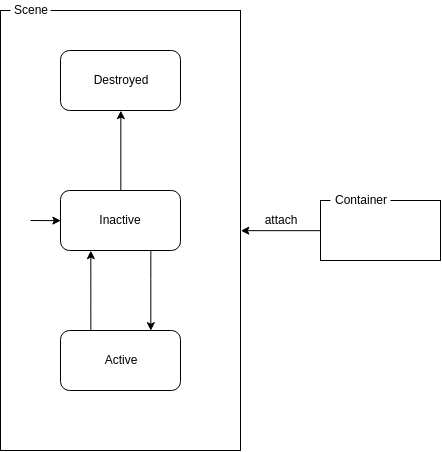

Scenes
In a typical mobile application, the user can navigate from one destination to another. Each of these destinations can be regarded as a ‘screen’: a set of components that fulfill a very specific use case. For example, the main screen of a Twitter client may show a list of tweets to the user.
In Acorn these screens are represented by Scene objects1.
A Scene represents a destination in an application the user can navigate to.
A Scene is usually a screen in your application, but may also be a dialog or
even something entirely else.
A single traditional ‘screen’ could perhaps even consist of two separate Scenes,
for example when you enter an ‘edit mode’ for the screen.
Lifecycle
People seem to have difficulties grasping the concept of lifecycles, or how to deal with it. However, these lifecycles are very useful, and quite necessary to actually be able to do something. When a screen becomes active in the application, it may want to start calling use cases in the business layer to retrieve some data. When it becomes visible to the user, it may want to register listeners to the UI to react to events. When it is replaced by another screen, it may need to stop listening for updates, and when it is destroyed (by popping it from a back stack for example), it may need to do some cleanup. Lifecycle callbacks are an excellent way to go and handle these scenarios.
The Activity indeed has a somewhat complicated lifecycle in the sense that it gets destroyed on configuration changes, such as device rotation. For Scenes this is not the case: the UI gets attached to the container when available, and detached when it becomes unavailable again. When the device gets rotated from portrait to landscape, this can be seen as the disappearance of the portrait UI, and the appearance of the landscape UI.
Scene lifecycle
In the basis, a Scene can be ‘started’ or ‘stopped’, and generally there is only
one active Scene at a time.
To be able to interact with the user, a Scene can define a Container type that
can be attached to it.
This Container represents the View through which a Scene can display data to the
user and receive input events.
interface Scene<V : Container> {
fun onStart() {}
fun attach(v: V) {}
fun detach(v: V) {}
fun onStop() {}
fun onDestroy() {}
}
The lifecycle of a Scene is very simple:
- ‘started’ : The Scene is dormant, waiting to be started or to be destroyed.
- ‘stopped’ : The Scene is started.
- ‘destroyed’: The Scene is destroyed and will not be started anymore
During the lifetime of a Scene it can go from ‘stopped’ to ‘started’ and vice versa multiple times, until it reaches the ‘destroyed’ state.
Next to this, the Scene provides the attach and detach methods through which
Container instances can be attached and detached.
During the lifetime of a Scene, it is possible that multiple Containers are
attached to it, though only one at a time.
For example, a simple “Hello World!” screen could be implemented as follows:
interface HelloWorldContainer : Container {
var text: String
}
class HelloWorldScene : Scene<HelloWorldContainer> {
override fun attach(v : HelloWorldContainer) {
v.text = "Hello World!"
}
}

Events
Often, certain events happen in a screen that should cause a transition to another screen. This could be a user having logged in successfully, or pressing on an item to view its detail screen. A Scene however should have no knowledge of navigation flow, meaning it cannot tell the system to go to another Scene. Instead, it can notify the component that does have control over navigation flow that an event has happened, like “this item was clicked!”.
A typical pattern for this is to define an interface for these events, and let the Scene accept an instance of this interface in its constructor. The listener can then act on these events accordingly, such as navigating to another Scene.
class LoginScene(
private val loginInteractor: LoginInteractor,
private val listener: Events
) : Scene<LoginContainer> {
/* ... */
private fun doLogin(username: String, password: String) {
loginInteractor.login(username, password) { user : User ->
listener.onLoggedIn(user)
}
}
interface Events {
/** Called when this Scene is done logging in given user. */
fun onLoggedIn(user: User)
}
}
For more information about navigation, see Navigators.
Saving and restoring state
It is possible that an application is killed while the user has navigated to a particular Scene. When the user returns to the application it is expected that the application restores to the state it was left in. This means that it is necessary to be able to restore Scenes from a serialized state.
For ‘static’ Scenes that take no arguments (like our HelloWorldScene above)
this usually is no problem.
Scenes that do take arguments or have other state they wish to preserve need to
implement the SavableScene interface.
This introduces a saveInstanceState function, allowing the Scene to persist its
state to a serializable format.
When the Scene needs to be restored, this serialized state will then be provided.
class ShowItemScene(
private val itemId: Long
) : Scene<ShowItemContainer>, StateSaveable {
override fun saveInstanceState(): SceneState {
return sceneState {
it["item_id"] = itemId
}
}
companion object {
fun create(state: SceneState): ShowItemScene {
return ShowItemScene(itemId = state["item_id"])
}
}
}
Container state
Container state (or view state) saving and restoring is a very important topic for mobile applications. Whenever a user has entered text or scrolled a list to a particular position and navigates away from the screen to later return again, it is expected that the entered text or the scroll position is still there.
Next to saving their own state, Scenes are also responsible for saving and
restoring the Container states.
Since multiple Containers can be attached to and detached from the Scene, their
state needs to be saved and restored between the Container instances as well.
This can easily be done by saving the Container state in the detach method,
and restoring it in the attach method.
Finally, when saving the Scene state, the most recent container state needs to
be persisted as well.
The SavableScene class provides a base implementation that handles all this.
Scenes vs. Activities or Fragments
In a sense, Scenes are similar to Activities or Fragments: when used as a primary navigational unit, they both represent a screen in an application.
A couple of key differences are:
- Scenes are not created by the system, but can accept dependencies in their constructors;
- Scenes only have one responsibility: connecting the UI to the business logic.
They do not:
- Create any views
- Control application flow directly
- Have system callbacks (like permissions)
- Scenes always survive configuration changes.
-
Note that Acorn’s
Sceneobjects are a completely different concept than Android’s Scenes used for transitions. ↩